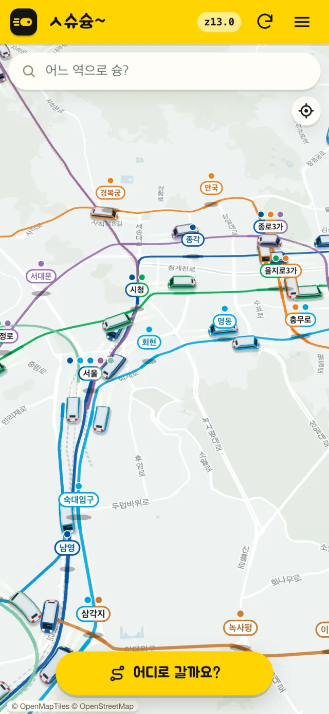
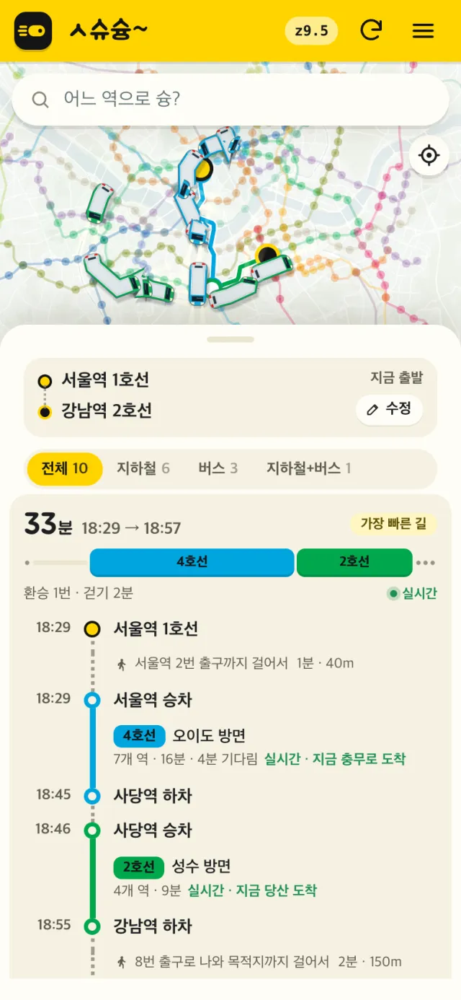

지금 열차가 어디쯤인지, 지도에서 보세요
앱 출시 예정 · 지금은 웹에서 쓸 수 있어요
열차가 지금 어디쯤인지 보여요
열차가 실제 선로를 따라 움직여요. 위치는 15~25초마다 바뀌고, 그 사이는 선로를 따라 이어서 그려요. 열차를 누르면 그 열차를 따라가요.

어디로 갈지만 정하세요
지하철 · 버스 · 걷기를 이어 가장 빠른 길부터 보여 줘요. 실시간 정보가 있는 구간은 탈 열차가 지금 어디쯤인지도 함께 보여 줘요.

승차권 — 자주 타는 길을, 타는 시각에 맞춰
출퇴근길처럼 늘 같은 시각에 타는 길을 승차권 한 장으로 저장해 두세요.
- 길과 시각을 정해요출발지 · 도착지 · 출발 시각 · 타는 요일을 고르면 돼요.
- 그 시각의 경로를 골라요다음에 탈 날 그 시각을 기준으로 찾은 경로들 가운데 하나를 골라 승차권에 담아요.
- 승차권을 뒤집어 확인해요어디서 갈아타는지, 출발 시각, 타는 날이 적혀 있고 오늘 타는 승차권에는 '오늘' 표시가 붙어요. '지도에서 보기'로 그 길을 지도에 그려 볼 수 있어요.
 출근권
출근권승차권은 로그인한 뒤에 쓸 수 있어요.
같은 서울, 다른 세계로 갈아입어요
출근길 지도가 기와집 마을도, 스타크래프트 도시도, 도트 게임도 돼요. 모드를 눌러 미리 보세요.


내 캐릭터도 같이 갈아입어요
지도를 가까이 당기면 내 위치에 캐릭터가 서요. 모드를 바꾸면 캐릭터도 바뀌어요.
- 새싹 볼빵 후디기본
- 꼬마 건설 반장심시티
- 갓 쓴 꼬마 선비조선
- 두근두근 나들이롤러코스터
그 밖에
- 역 이름으로 바로 찾아가기
- 역을 누르면 그 역에 들어오는 열차 보기
- 밝은 화면 · 어두운 화면, 자동으로 낮 · 밤에 맞추기
자주 묻는 질문
지도에 보이는 열차 위치는 얼마나 정확한가요?
실시간 열차 자료는 실제보다 20초에서 1분쯤 늦고, 열차 위치는 15~25초마다 바뀌어요. 슝은 그 사이를 선로를 따라 이어서 그리기 때문에 실제 열차와 조금 차이가 날 수 있어요.
승차권은 무엇인가요?
자주 타는 길을 저장해 두는 카드예요. 출발지 · 도착지 · 출발 시각 · 타는 요일을 정하면 다음에 탈 날 그 시각을 기준으로 경로를 찾아 주고, 고른 경로를 승차권에 담아 둬요. 승차권을 뒤집으면 어디서 갈아타는지와 출발 시각이 보이고, 오늘 타는 승차권에는 '오늘' 표시가 붙어요.
로그인해야 쓸 수 있나요?
지도와 길찾기는 로그인 없이 쓸 수 있어요. 승차권처럼 내 것을 저장하는 기능만 로그인한 뒤에 쓸 수 있어요.
어떤 자료를 쓰나요?
노선 · 역 · 시간표는 KTDB(국가교통DB, 한국교통연구원) 대중교통 GTFS, 실시간 열차 위치 · 도착은 서울특별시 열린데이터광장, 배경 지도와 선로 모양은 OpenStreetMap 기여자(ODbL) · OpenMapTiles 자료를 써요.
휴대폰에서도 되나요?
네. 지금은 설치 없이 휴대폰과 컴퓨터의 브라우저에서 바로 열려요.
앱은 받을 수 있나요?
아직이에요. iOS · Android 앱을 준비하고 있고, 스토어에 올리기 전이라 지금은 받을 수 없어요. 그동안 웹에서 같은 지도를 쓸 수 있어요.
앱이 나오면 승차권을 다시 만들어야 하나요?
아니요. 승차권은 서버에 저장되니까 같은 계정으로 로그인하면 앱에서도 그대로 볼 수 있어요.